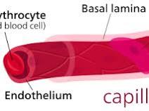
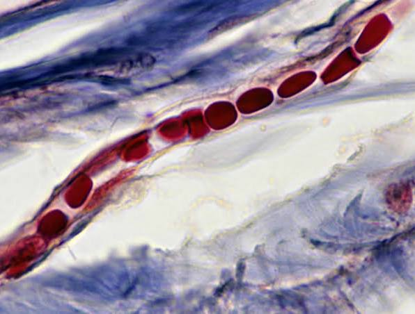
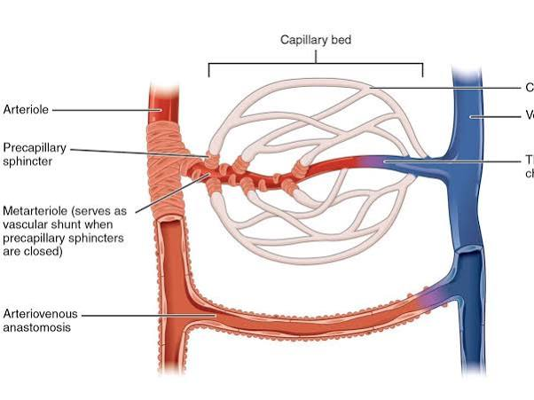
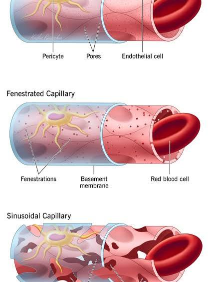
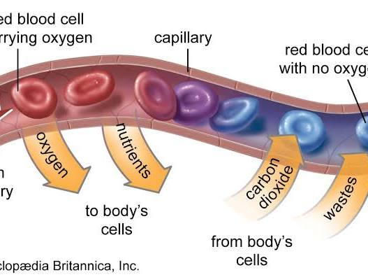
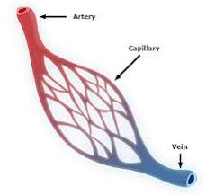
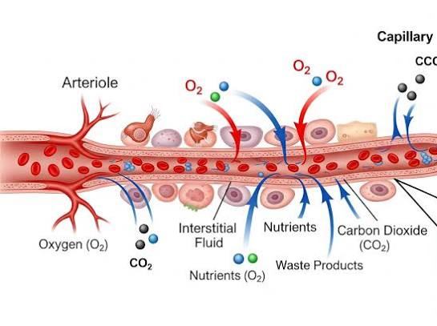
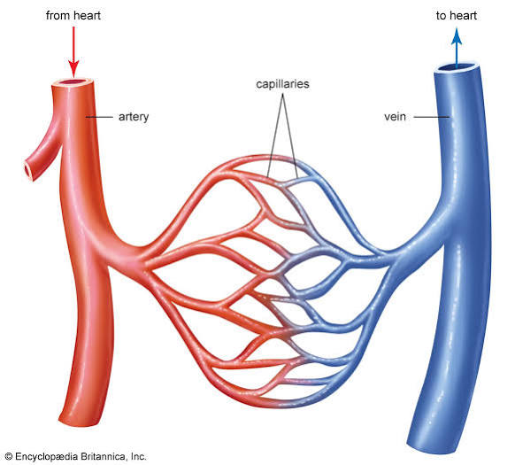

Conversation 824
Capillary Blood Vessels
Prompt 1 · You
Capillary
Response 1 · Google AI Mode
The term capillary primarily refers to the smallest, thinnest-walled blood vessels in the circulatory system. It also refers to any hair-like, narrow-bore tube capable of experiencing fluid movement via capillary action.  Wikipedia +3
Wikipedia +3
Wikipedia +3







🩸 Biological Capillaries
In human anatomy and physiology, capillaries are microscopic microvessels measuring just 5 to 10 micrometres in diameter. They are so narrow that red blood cells must often squeeze through them in a single-file line. Wikipedia
Wikipedia- The Connection: They form vast networks called capillary beds that connect the smallest arterial branches (arterioles) to the smallest venous branches (venules).
 ScienceDirect.com +1
ScienceDirect.com +1 - The Structure: Their walls are composed of a single layer of simple squamous endothelial cells (the tunica intima) surrounded by a thin basement membrane. This ultra-thin barrier allows for efficient diffusion.
 National Institutes of Health (NIH) | (.gov) +3
National Institutes of Health (NIH) | (.gov) +3 - The Function: Capillaries are the primary site of substance exchange. They drop off oxygen and essential nutrients to surrounding tissues while absorbing carbon dioxide and metabolic waste products like urea and lactic acid to be filtered out of the body.
 Cleveland Clinic +1
Cleveland Clinic +1
Types of Blood Capillaries
The body utilizes three distinct variations depending on the level of permeability required by specific organs:  YouTube·ThePenguinProf +1
YouTube·ThePenguinProf +1
YouTube·ThePenguinProf +1| Capillary Type | Structural Features | Key Locations |
|---|---|---|
| Continuous | Interlocking tight junctions; tightly sealed walls with no pores. | Nervous system (blood-brain barrier), lungs, fat, and muscle. |
| Fenestrated | Contains small pores (fenestrae) allowing faster molecule filtration. | Kidneys, small intestine, and endocrine glands. |
| Sinusoidal | Large structural gaps and incomplete basement membranes for maximum permeability. | Liver, spleen, and bone marrow. |
🧪 Physical Capillaries & Capillary Action
In physics and engineering, a capillary is any tube with an incredibly small internal diameter. These micro-tubes exhibit a phenomenon known as capillary action, which is the ability of a liquid to flow upward through narrow spaces against the force of gravity.
USGS (.gov) +3
- The Mechanics: This movement is dictated by the relationship between adhesive forces (the fluid's attraction to the tube wall) and cohesive forces (the intermolecular attraction holding the fluid molecules together). YouTube·DestructiveCreativity +1
- The Result: When adhesion is stronger than cohesion, the liquid climbs the wall, forming a concave curve (meniscus) and generating a positive capillary pressure that pulls the fluid upward. The narrower the tube, the higher the liquid will rise. YouTube·S. Michael Stewart +2
Are you exploring "capillary" from a medical/biological standpoint (such as microcirculation or capillary exchange) or a physics standpoint (such as fluid dynamics and capillary action)?
Let me know your specific focus, and I can unpack the math or mechanisms in greater detail!
Source links preserved from this response
- en.wikipedia.org
https://en.wikipedia.org/wiki/Capillary - www.sciencedirect.com
https://www.sciencedirect.com/topics/immunology-and-microbiology/capillary - www.ncbi.nlm.nih.gov
https://www.ncbi.nlm.nih.gov/books/NBK546578/ - my.clevelandclinic.org
https://my.clevelandclinic.org/health/body/21988-capillaries - www.youtube.com
https://www.youtube.com/watch?v=UzHNtWYrjxg - www.usgs.gov
https://www.usgs.gov/water-science-school/science/capillary-action-and-water - www.youtube.com
https://www.youtube.com/watch?v=IF7t7AH2P2o - www.youtube.com
https://www.youtube.com/watch?v=jIdx5TXgJW0